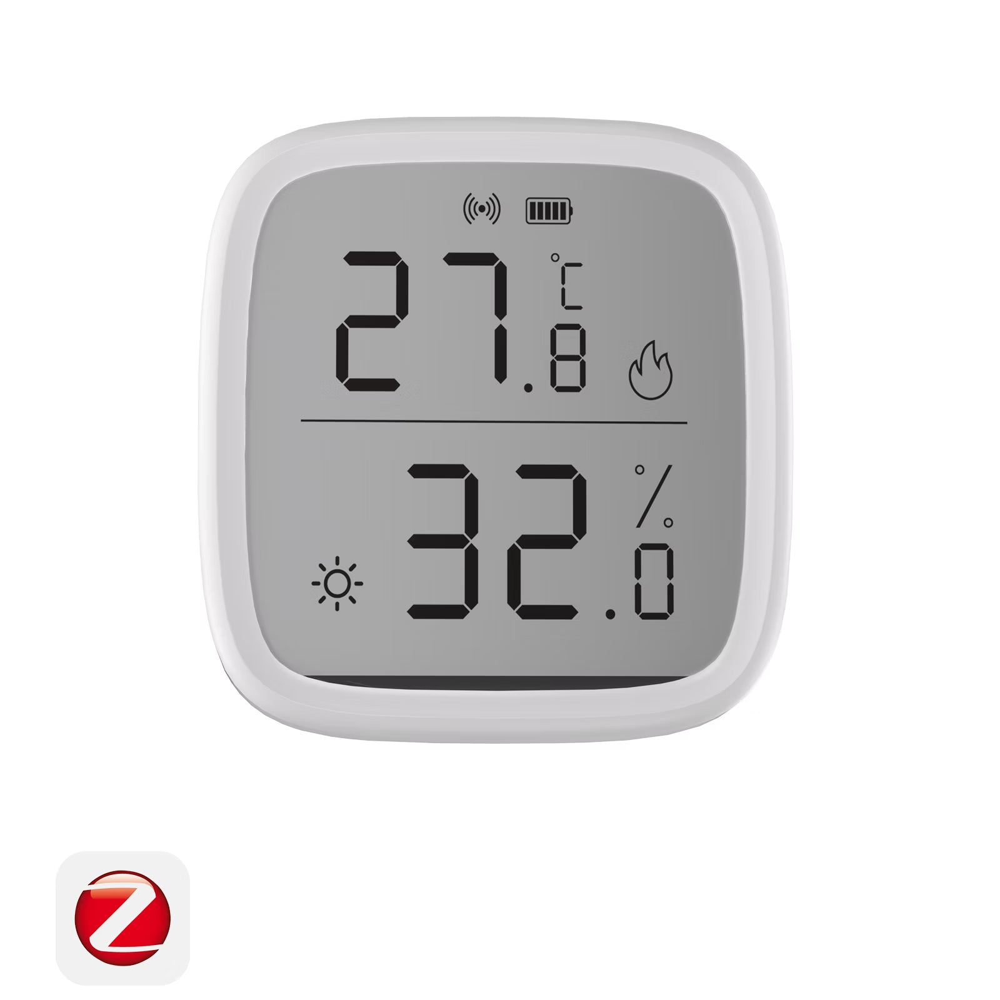

Picks · Sensors
The best temperature sensor for Home Assistant (2026)
Disclosure: HA News earns a commission from qualifying purchases made through the Amazon links on this page. Prices and stock are on Amazon; we don't quote them here.
Temperature sensors are the cheapest useful hardware in a smart home and the ones that quietly power the most automations: thermostat trims, fan triggers, frost alerts, the garage door complaint from a spouse. Almost none of them talk to Home Assistant directly — they need a radio and a local integration. For most houses the best temperature sensor for Home Assistant is the SONOFF SNZB-02D, a Zigbee 3.0 temperature and humidity sensor with a built-in 2.8-inch LCD and honest spec-sheet accuracy of ±0.2 °C. It costs little, runs on a coin cell for a long time, and pairs to Home Assistant through Zigbee2MQTT or ZHA without any cloud account.
This guide walks through the pairing path, the spec details from the manufacturer pages, the alternatives worth considering, and the gotchas that show up on forums — stuck sensors, unit quirks, Xiaomi pairing oddities.

How temperature sensors reach Home Assistant
Home Assistant doesn't have a native radio. Whatever protocol a sensor speaks, it reaches Home Assistant through an integration: Zigbee devices via a coordinator dongle (ZHA, the built-in integration, or Zigbee2MQTT, the add-on), Bluetooth devices via HA's Bluetooth stack or an ESPHome Bluetooth proxy, Wi-Fi devices rarely (unless they run ESPHome or use local APIs). The Zigbee coordinator is the backbone for sensors, and Zigbee temperature sensors are the largest category — cheap, battery-friendly, mesh-native.
Per Zigbee2MQTT's device page, Zigbee temperature/humidity sensors pair to Home Assistant via Zigbee2MQTT or ZHA — with a coordinator such as the SONOFF ZBDongle-E — and expose temperature, humidity and battery entities once joined. That means one coordinator can host sensors from Sonoff, Aqara, Xiaomi and dozens of other marques side by side, which is a real argument against buying into any single vendor's bridge. If you're deciding between the two Zigbee stacks, our ZHA vs Zigbee2MQTT comparison covers the trade-offs.
Our pick: SONOFF SNZB-02D
| Spec | SONOFF SNZB-02D |
|---|---|
| Protocol | Zigbee 3.0 (IEEE 802.15.4), end device |
| Display | Built-in 2.8-inch LCD |
| Accuracy | ±0.2 °C, ±2% RH (per manufacturer spec page) |
| Update interval | Every 5 s |
| Measuring range | -9.9 °C to 60 °C, 5–95% RH non-condensing, indoor use |
| Battery | CR2450 (3 V) |
| Radio chip | EFR32MG22 (per spec page) |
| Dimensions | 59.5 × 62.5 × 18.5 mm, indoor use |
| Mounting | Tabletop stand, magnetic back, or 3M adhesive |
All spec figures are from Sonoff's official spec page and its product page. What you get for that: a display that reads out conditions at a glance without opening a dashboard, ±0.2 °C accuracy that is genuinely good at this category's price point, and 5-second updates that are fast enough to drive automations directly rather than just charting.
Zigbee2MQTT exposes the entities HA cares about: temperature, humidity, and battery, plus configuration options for comfort min/max thresholds, temperature_units, and temperature and humidity calibration offsets. The device supports OTA firmware updates — Z2M's page notes firmware v2.3.0 improved reporting and updates via a short press of the pairing button plus a click in the web UI. Check SONOFF SNZB-02D on Amazon for current price and stock.
Setting it up with Home Assistant
- Plug a Zigbee coordinator into the Home Assistant machine — the SONOFF ZBDongle-E is the common pairing with Sonoff sensors. Sonoff's own docs for the 02D list ZBBridge, NSPanel Pro, iHost and the ZBDongle-P/E dongles as supported gateways, per the official user manual; with Home Assistant, the dongles are the direct path.
- Run Zigbee2MQTT or ZHA against that coordinator. Our Zigbee2MQTT + Home Assistant setup guide covers the add-on install if you're starting from zero.
- Long-press the 02D's pairing button for 5 seconds until the display indicator blinks, per Z2M's device page. It should join and expose its entities.
- Place it. The stand, magnet and adhesive give you three mounting options; keep it off exterior walls and out of direct sun for honest readings.
Note on eWeLink: Sonoff's marketing page says the SNZB-02D can be added to Home Assistant via the eWeLink add-on, but the direct local path — no cloud account, no vendor bridge — is a Zigbee coordinator with Zigbee2MQTT or ZHA, per Zigbee2MQTT's page. HA News prefers the local path; cloud integrations break in ways local ones don't.
Alternatives worth knowing
- SONOFF SNZB-02 (older sibling, no display). Same CR2450 battery, no screen, and Z2M exposes battery, temperature, humidity and voltage with calibration and precision options, per its Z2M page. It's still in Sonoff's current sensor lineup alongside the SNZB-02LD (external probe) and SNZB-02WD (IP65 outdoor), per Sonoff's category page. Pairing: press the reset button 5 s until the LED flashes three times.
- Aqara T1 (WSDCGQ11LM), a round puck on a CR2032. Z2M exposes temperature, humidity, pressure, battery and voltage. Known Xiaomi-family quirks per the Z2M page: pair it near a router device if joining fails, treat a link quality below 20 as weak, and note that low battery voltage can cause disconnects even when the battery still reads full.
- Aqara T2 (WSDCGQ12LM). The one to pick when you want barometric pressure too: it adds pressure and
device_temperatureandpower_outage_countto temperature, humidity and battery, per its Z2M page. Gotcha: it likely needs a coordinator firmware newer than 2021. Pair by holding reset about 5 s until the blue LED blinks. - Xiaomi LYWSD03MMC, the famous cheap hygro-thermometer. Ships Bluetooth-only, but a community custom firmware flashes it to Zigbee for Zigbee2MQTT with full entity support and OTA, per the Z2M page. Or skip the flash: it works over plain Bluetooth in HA, including via an ESPHome Bluetooth proxy.
Gotchas to know before you buy
The °C/°F button is display-only. A double-press of the pairing button toggles the LCD between Celsius and Fahrenheit, but per Z2M's page the unit the sensor reports to Home Assistant doesn't change — fix the reported unit through the temperature_units option in Zigbee2MQTT instead, not the button.
Stuck sensors have a known recovery. If a sensor stops reporting: force-remove it from Zigbee2MQTT, restart Z2M, and re-pair. If pairing itself fails, pull the battery for 10 seconds. This is documented on the Z2M device page and applies to both the 02D and the 02 (per its page), so it's better understood upfront than at 11 pm.
Indoor range limits. The 02D is rated -9.9 °C to 60 °C, indoor use, per the spec sheet. For a freezer, a crawlspace, or outdoor monitoring, that's not the tool — the SNZB-02WD is Sonoff's IP65 outdoor variant, and a probe-type sensor (SNZB-02LD) suits a freezer's coil.
Calibration beats replacement. If a reading seems off versus a reference thermometer, both Sonoff and Aqara devices expose calibration offsets in Zigbee2MQTT. Setting a one-degree offset is cheaper and quieter than buying another sensor.
Pick the radio after the rooms. Before buying a fleet, confirm you have (or will buy) a coordinator. The sensor decision and the coordinator decision are really one decision — a shelf full of Zigbee sensors and no dongle is a common expensive mistake. And once the network exists, water detection is usually the next sensor purchase; our water leak sensor roundup covers that, and for occupancy the Aqara presence sensor guide covers indoors detection.
FAQ
Which temperature sensor works best with Home Assistant?
The SONOFF SNZB-02D is the top pick: a Zigbee 3.0 temperature and humidity sensor with a built-in 2.8-inch LCD, ±0.2 °C accuracy, 5-second updates, and pairing to Home Assistant through Zigbee2MQTT or ZHA.
How do I add a SONOFF SNZB-02D to Home Assistant?
Plug a Zigbee coordinator dongle such as the SONOFF ZBDongle-E into your Home Assistant machine, run Zigbee2MQTT or ZHA, then long-press the pairing button for 5 seconds until the display indicator blinks and let it join.
How accurate is the SNZB-02D?
Per the official spec sheet it is rated at ±0.2 °C and ±2% relative humidity, updates every 5 seconds, and measures from -9.9 °C to 60 °C at 5–95% RH non-condensing.
Does the SNZB-02D work without a hub?
No. It is a Zigbee 3.0 end device, so it needs a Zigbee 3.0 coordinator or hub — for Home Assistant that means a USB coordinator dongle running Zigbee2MQTT or ZHA.
Why does my Zigbee temperature sensor stop reporting?
If a sensor gets stuck, Zigbee2MQTT's recovery is to force-remove the device, restart Zigbee2MQTT, and re-pair it; if pairing fails, pull the battery for 10 seconds. Low battery voltage can also cause disconnects on some Xiaomi sensors even when the battery reads full.
Can I get temperature, humidity and pressure in one sensor?
The Aqara T2 (WSDCGQ12LM) adds barometric pressure alongside temperature, humidity and battery, which the Sonoff SNZB-02D and SNZB-02 do not expose.
- Primary sources
- SONOFF SNZB-02D spec page; SONOFF product page; SONOFF user manual; Zigbee2MQTT SNZB-02D; Zigbee2MQTT SNZB-02; Zigbee2MQTT Aqara T1; Zigbee2MQTT Aqara T2; Zigbee2MQTT LYWSD03MMC
As an Amazon Associate, HA News earns from qualifying purchases.